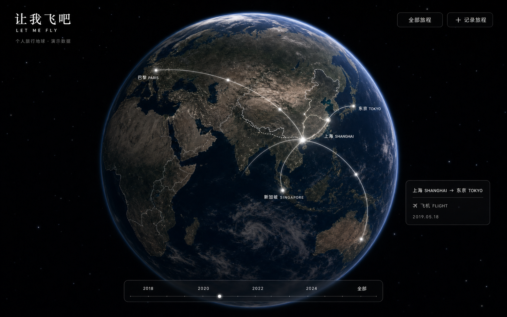

Selected projects · 2026
让日常使用，
成为设计的起点。
制作本地 AI、原生 macOS 工具和交互式网页，关注创作、个人记录与使用体验。
Local AI, native macOS tools, and interactive web experiences for everyday creative work.
精选作品
项目案例 · 架构 · 验证范围How I work
从需求到迭代
真实需求
从日常记录与创作中寻找具体问题，把功能放进实际的使用流程里。
可解释的取舍
说明数据保存、权限划分、资源使用和异常恢复的设计原因，而不止列出技术名称。
可追溯的进展
通过版本与验证记录，区分已实现、已验证和仍待确认的部分。
AI 辅助开发
我负责需求定义、使用体验与迭代决策，借助 AI 推进实现，并结合使用反馈检查与改进。